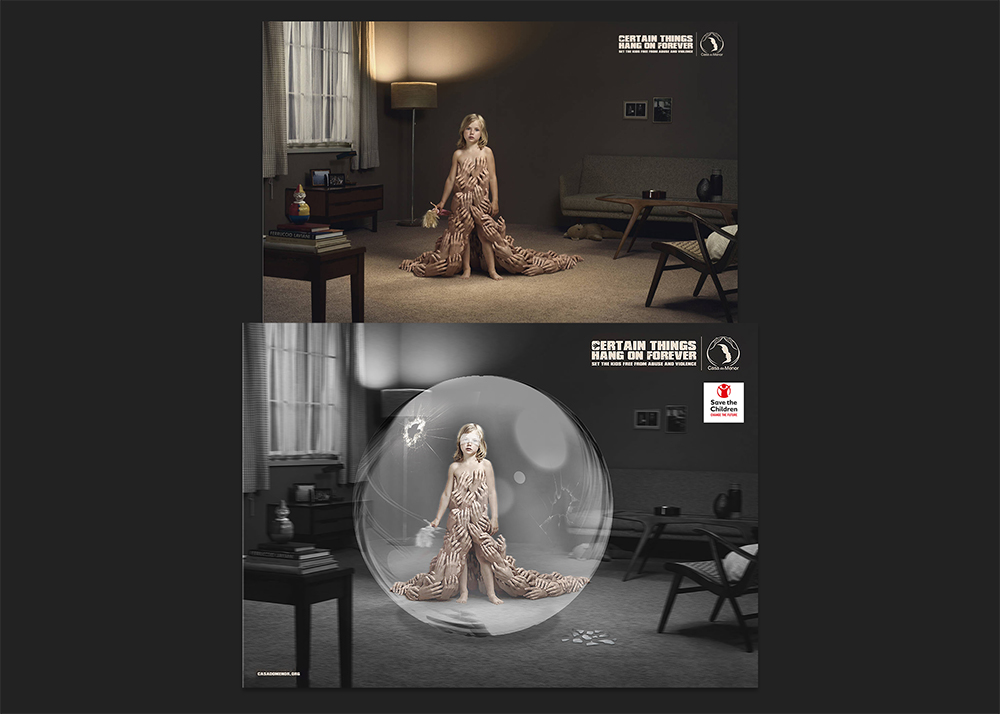
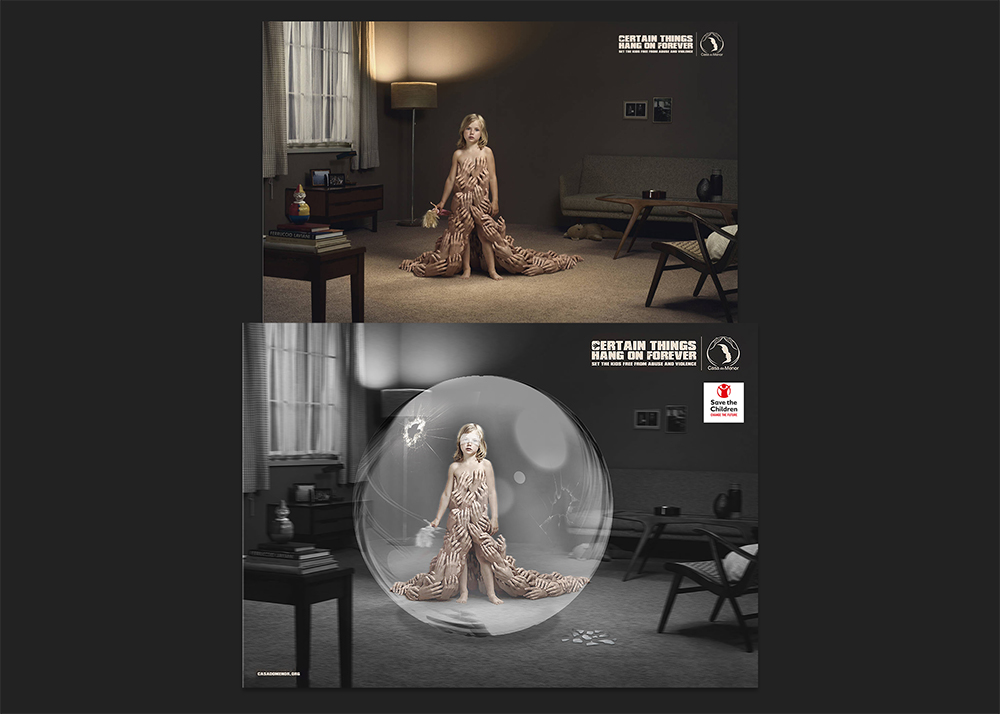

★ bewustwordingscampagne
★ Poster Design
★ Photoshop
Soort project
Beeld en taal
Tijd
2 weken
Team
Individueel project
Semiotiek/retorica/gestalt
Tijdens het vak 'Beeld & Taal' hebben we ons verdiept in de theorieën van semiotiek, retorica en de gestaltprincipes. Voor dit vak heb ik drie opdrachten/projecten uitgevoerd. Als afsluitende opdracht ontwierp ik een bewustwordingsposter die een maatschappelijk probleem belicht.
In mijn bewustwordingscampagne richt ik me op de fast fashion-industrie. Mijn poster toont duidelijk het contrast tussen een jonge vrouw die in een fast fashion-fabriek werkt en uitgebuit wordt, en een andere jonge vrouw die net enkele kledingstukken heeft gekocht bij een fast fashion-keten, zoals H&M. Door deze twee beelden naast elkaar te plaatsen, wil ik mijn doelgroep laten zien wie hun kleding maakt en onder welke omstandigheden dat gebeurt. Mijn doel is om hen te informeren en te motiveren om bewust te kiezen voor tweedehands kleding en het vermijden van fast fashion-ketens.
01
Proces
Voor de eerste opdracht koos ik een object en plaatste dit in drie verschillende contexten, met vier visuals die het object en zijn toepassing uitbeelden. Het object moest ook een indexiaal teken achterlaten, een directe verwijzing naar het object of de situatie.
- Afbeelding 1: Lippenstift gebruikt als stempel op een brief.
- Afbeelding 2: Lippenstift aangebracht op de lippen.
- Afbeelding 3: Lippenstift gebruikt om een boodschap op een spiegel te schrijven.
Daarnaast selecteerde ik een bestaande campagneposter en paste ik de geleerde theorie toe om deze te versterken. Door elementen zoals een glazen bol, barsten, zwart-wit contrast en een blinddoek toe te voegen, maakte ik de boodschap krachtiger en visueel overtuigender.
 
